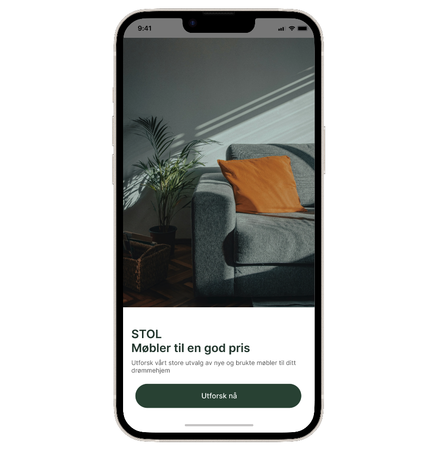
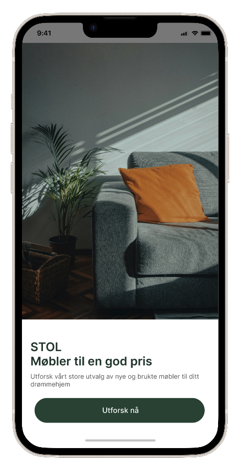
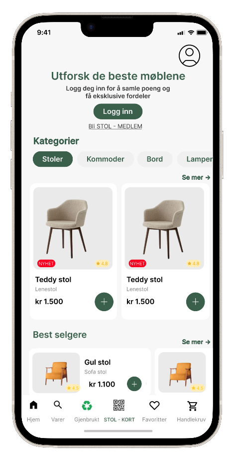
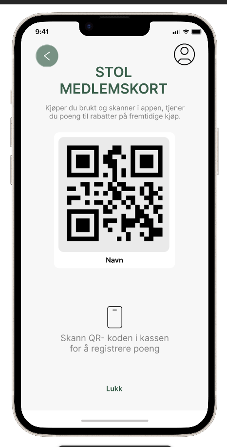
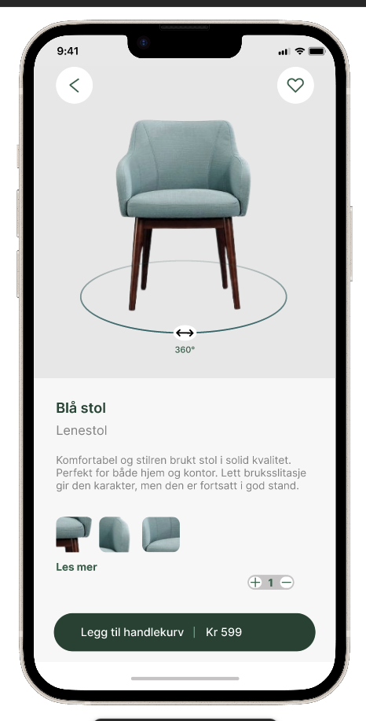

STOL
A mobile app prototype that combines affordability, trust, and sustainability by giving students a safe and professional platform to browse and purchase both new and second-hand furniture.
View Full Figma Prototype
Role
Project leader and UX/UI Designer
Tools
Figma, Illustrator
Overview
STOL is a concept mobile app created for the furniture company STOL, developed as part of a UX/UI and service design project. The goal of the project was to explore how STOL could introduce a more sustainable business model focused on reused furniture for students in Oslo. The solution was designed to make second-hand furniture shopping safer, simpler, and more accessible through a professional digital platform.
The project focused on user research, information architecture, wireframing, and interactive prototyping in Figma. The final concept combined sustainability, affordability, and trust into one cohesive user experience.
The Problem
Many students in Oslo live on limited budgets and struggle to find affordable furniture of good quality. While platforms such as Finn.no, Facebook Marketplace, and Tise already offer second-hand products, students often experience uncertainty related to product quality, unreliable sellers, and complicated pickup or payment processes.
The challenge was to explore whether there is a market for a safer and more professional second-hand furniture experience specifically designed for students. STOL wanted a solution that could combine sustainability with a trustworthy and user-friendly buying experience.
Process
The project followed a user-centered and iterative design process consisting of research, analysis, concept development, prototyping, and usability testing.
We began by conducting market analysis and examining existing platforms such as Finn.no, Facebook Marketplace, and Tise to identify strengths, weaknesses, and opportunities for differentiation. Research showed that students valued affordability and sustainability but lacked trust in existing second-hand marketplaces.
To better understand user needs and motivations, we conducted both quantitative and qualitative research methods, including surveys and interviews with students in Oslo. The findings revealed a strong interest in reused furniture, but also highlighted concerns related to safety, quality assurance, and ease of use.
Based on the insights, we developed personas, user flows, conceptual models, and low-fidelity wireframes in Figma. The design process focused on creating a clean and intuitive interface tailored toward students, with simple navigation and a clear structure.
The final stage included the development of a high-fidelity interactive prototype and usability testing with users performing task-based scenarios such as browsing reused furniture, viewing products, and using the reward system. Feedback from testing helped improve navigation clarity and feature discoverability.
Prototype Screenshots
Selected screens showcasing different parts of the project and user flow.




Result
The final solution was a prototype of a professional marketplace app where students could safely browse and purchase both new and reused furniture through STOL. The concept focused on affordability, sustainability, and trust by offering quality-checked furniture in a modern and easy-to-use platform.
The prototype included features such as product browsing, category navigation, reward scanning for points, and a dedicated section for reused furniture. User testing showed that participants appreciated the professional appearance, simple navigation, and the idea of a trusted second-hand marketplace designed specifically for students.
Through this project, I gained valuable experience in user research, service design, prototyping, usability testing, and designing digital solutions based on real user insights and sustainability-focused business goals.